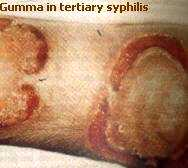

TYPE IV HYPERSENSITIVITY – GENERAL DESCRIPTION AND HISTORY
This type of hypersensitivity is irrelevant to circulating Ig and initiated by specifically sensitized T lymphocytes. It includes two subtypes:
- classical delayed-type hypersensitivity reactions, mediated by CD4+ Th1 cells, secreting cytokines and recruiting other cells,
- CD8+ T-cell-mediated cytotoxic reactions, which require assistance of antigen specific CD4+ Th2-cells and constitutes the tissue damage mediated directly by CD8+ T cells. The cytokines, especially IFNg , are also of some value in this mechanism, but their source and array is distinct from that of former subtype.
It is the principal pattern of immunological response to a variety of intracellular persistent microbiologic agents, particularly Mycobacterium tuberculosis, but also to many viruses, fungi, protozoa, and parasites. So-called contact skin sensitivity to chemical agents and many (but not all) mechanisms of graft rejection and tumor combat are other instances of cell-mediated reactions. The two forms of type IV hypersensitivity are described next.
The diagnosis of type IV hypersensitivity is based on intradermic allergotests and skin patch tests. Several methods are based on discovery of lymphokine presence and evaluation of their amount (WBC migration inhibition test, blast-transformation test).
E. Jenner (1798) gave first clinical medical description of DTH.
Scientific approach to this phenomenon was founded by R. Koch (1890), 
As it was discussed in “Basic Immunology” section, the form of immune response towards a given Ag depends on the mode of its presentation by APC. DTH will predominate if an Ag is presented as endocellular one. ITH prevails for Ags that are presented as engulfed extracellular ones. That’s why, DTH starts easy and achieves great intensity under the triggering by the germs, able to persist within APC for a long time. It is also typical if immune response is stimulated by antigens and haptens staying long in the focus of reaction, without resorbtion. Small doses of Ag, particularly in intradermic injection, provoke mostly DTH. After intravenous Ag injection the boosting of DTH is minimal. Complete Freund’s adjuvant (mineral oil + mycobacteria) augments both cellular and humoral responses. Intradermic injection of an Ag with adjuvant, performed after intravenous one, promotes antibody production. Alive germs stimulate DTH more actively, than killed ones. Highly pathogenic strains are more active as DTH allergens, than non-pathogenic ones. DTH is eagerly provoked by corpuscular Ags, aggregated proteins, non-metabolizable inorganic haptens (e.g. metals). But, sensitization of IV type towards soluble proteins can be achieved only if they are introduced with adjuvant or via intradermic route. Cytologically, most active provocateurs of DTH in germ cells are the components of cell wall. The ability to develop strong DTH response is inherited as a dominant sign.
According to R. Barnetson and D. Gawkrodger (1994), the following 3 variants of DTH are delineated, depending on location and spread of the offending allergen:
- Contact hypersensitivity.
- Tuberculin-type hypersensitivity.
- Granulomatous hypersensitivity.
NEXT CHAPTER OR